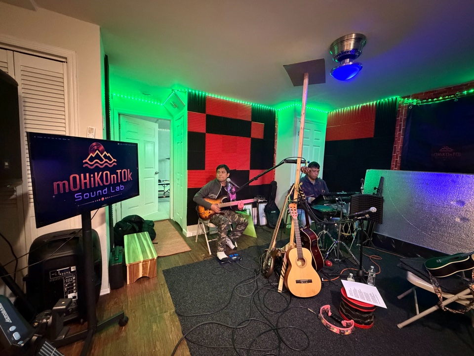

Rehearsal Space Rental in the Bronx: A Creative Home for Musicians and Artists
November 15, 2026 • By Idris
Finding the right place to practice, record, and create music can make a big difference in your creative journey. Whether you are a solo musician, a band, a singer, a podcaster, or a voice-over artist, having a quiet and comfortable space matters.
Mohikontok Sound Lab offers a creative and professionally designed recording and rehearsal space in the Bronx, New York. It is a place where musicians and creators can practice, record their ideas, and turn their creative work into finished productions.
Our Sound Lab is designed for artists who want more than an ordinary practice room. With acoustic treatment, sound isolation, professional audio equipment, and creative lighting, the space provides a welcoming environment for music, spoken-word recordings, podcasts, and other audio projects.
Whether you are preparing for a live performance or working on your next recording, Mohikontok Sound Lab gives you room to focus on your art.

A Professional Rehearsal and Recording Space
Mohikontok Sound Lab brings rehearsal and recording services together under one roof.
Our Sound Lab Space features a unique red and blue lighting setup, acoustic panels, and a comfortable creative atmosphere. It is suitable for local bands, independent musicians, singers, guitar players, spoken-word performers, and content creators.
You can use the space to:
- Practice with your band or musical group.
- Rehearse songs before a live performance.
- Practice vocals and musical instruments.
- Record original songs and music projects.
- Record poetry, storytelling, and spoken-word performances.
- Produce podcasts and voice-over projects.
- Create audiobooks and other spoken-word content.
The room has been designed to help reduce unwanted outside noise and improve the recording environment. This allows artists to focus on their performance without unnecessary distractions.
From Practice to Professional Recording
Sometimes, a great song begins with a simple practice session. At Mohikontok Sound Lab, you can take that idea further.
Start with a rehearsal, work on your arrangement, and move into a recording session when you are ready. Our audio production services can help you develop your recordings through mixing and mastering.
We aim to make the creative process easier by bringing several services together in one location.
Our services include:
Recording: Capture vocals, instruments, poetry, podcasts, and other audio projects.
Mixing: Balance vocals and instruments to create a clear and professional sound.
Mastering: Prepare your finished recordings for release and distribution.
Podcast Production: Record interviews, storytelling, conversations, and spoken-word programs.
Voice-Over Recording: Create audio for videos, presentations, educational materials, and other media projects.
Music Distribution and Artist Support
Making music is only one part of an artist’s journey. Sharing it with listeners around the world is another important step.
Mohikontok Sound Lab also supports independent artists with music release preparation and distribution-related services.
Our team can assist with technical release requirements, including ISRC and UPC codes, to help prepare music for distribution through major digital streaming platforms.
We believe independent artists should have opportunities to share their work with a wider audience while protecting the rights of the original creators.
Sound Equipment Rental for Events
Planning a private event, community gathering, or live performance?
Mohikontok Sound Lab also offers professional sound equipment rental options for selected events.
Depending on availability, equipment may include:
- Professional microphones
- Speakers and sound systems
- Audio mixing consoles
- Essential sound equipment for live performances
Whether you are organizing a small gathering or preparing for a musical event, having the right sound equipment can make a big difference.
Contact us to discuss your event and equipment requirements.
Why Choose Mohikontok Sound Lab in the Bronx?
Here are some reasons musicians and creators may choose our studio:
- A Creative Atmosphere. Our red-lit Sound Lab Space offers a unique environment for musicians, singers, and creative performers.
- Acoustic Treatment and Sound Isolation. The room features acoustic panels and sound-isolation construction designed to help create a better environment for practice and recording.
- Rehearsal and Recording in One Place. You can practice, record, and develop your music without having to move between different facilities.
- Audio Production Services. From recording to mixing and mastering, we offer services to help bring your creative ideas to life.
- Support for Independent Artists. We welcome musicians, poets, podcasters, and independent creators who want to share their original work.
- Convenient Bronx Location. Mohikontok Sound Lab is located at 1389 Kearney Ave, Bronx, NY 10465, serving artists and creators throughout New York City.
- Flexible Scheduling. Our studio operates 24 hours a day, seven days a week. Advance booking is recommended.
Frequently Asked Questions
1. Where can I rent a rehearsal space in the Bronx?
Mohikontok Sound Lab offers a rehearsal and recording space at 1389 Kearney Ave, Bronx, NY 10465. The facility is designed for musicians, singers, bands, podcasters, and other creative professionals.
2. Can I practice and record music in the same room?
Yes. The Sound Lab Space supports both music rehearsals and recording sessions. You can practice your songs and arrange a recording session to capture your performance.
3. Can I rent the studio for band practice?
Yes. The space is suitable for band rehearsals, individual practice, vocal sessions, and musical preparation before live performances.
Please contact us to discuss your band’s size, equipment needs, and booking time.
4. Is the studio available late at night?
Yes. Mohikontok Sound Lab operates 24/7. You can arrange sessions during the day, evening, or overnight, subject to booking availability.
5. Are audio engineers available to help?
Technical assistance may be available for microphone placement, recording equipment setup, and audio console operation. Please discuss your requirements when booking.
6. Can podcasters and spoken-word artists use the studio?
Absolutely! The studio is suitable for podcasts, poetry readings, storytelling, audiobooks, interviews, and voice-over recordings.
We welcome artists who want to capture the natural sound and emotion of their voices.
7. Can I get my music mixed and mastered?
Yes. We offer audio production services, including mixing and mastering, to help prepare your recordings for release.
8. Can you help distribute my music online?
We provide assistance with music release preparation, including ISRC and UPC code registration. These codes help identify your recordings and releases during digital distribution.
9. What equipment is available in the rehearsal room?
The studio features acoustic panels, microphones, audio recording equipment, and other production essentials. Additional equipment and specific instrument requirements should be discussed before booking.
10. Where is Mohikontok Sound Lab located?
We are located at:
1389 Kearney Ave
Bronx, NY 10465
We welcome musicians and creators from the Bronx and other parts of New York City.
11. How can I book a rehearsal or recording session?
You can contact Mohikontok Sound Lab through our website or call:
Phone: (551) 266-3479
Website: https://mohikontok.com
Tell us about your project, the number of people attending, and your preferred schedule. Our team can help you arrange a suitable session.
Your Ideas Deserve a Place to Be Heard
Every great recording starts with an idea. It could be a new song, a guitar arrangement, a poem, a story, or a conversation worth sharing.
At Mohikontok Sound Lab, we believe creative work deserves a space where artists can slow down, focus, experiment, and express themselves.
Mohikontok Sound Lab, 1389 Kearney Ave, Bronx, NY 10465 • (551) 266-3479 • studio@mohikontok.com • Open 24/7. Book a session.